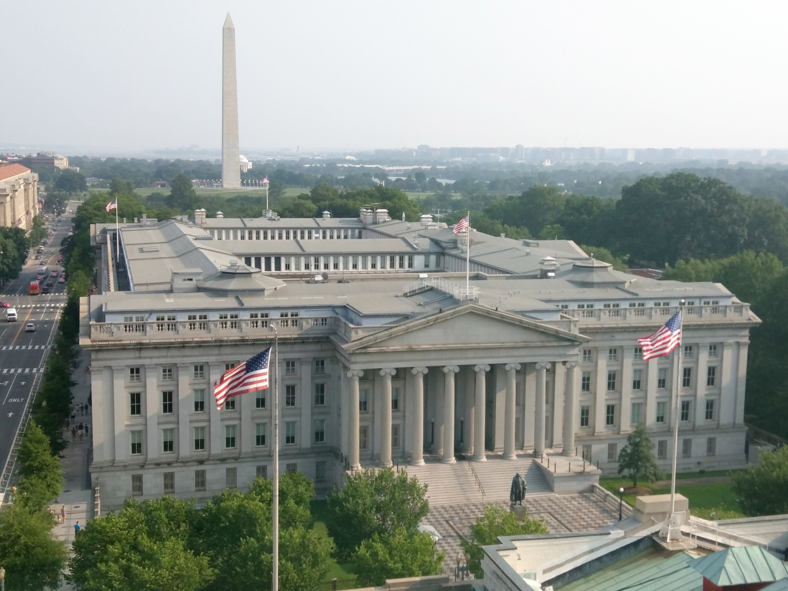
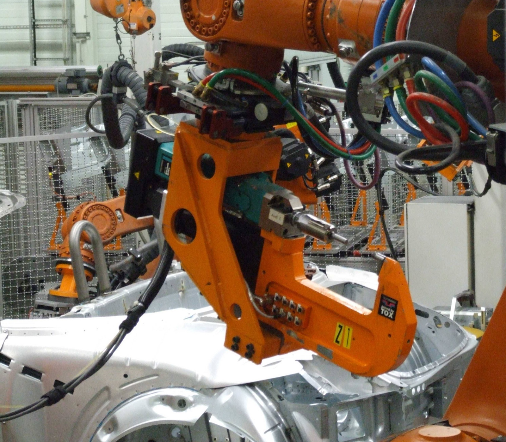

Executive Summary
현대차그룹이 미국 매사추세츠주 케임브리지에 세운 로봇·AI 연구기관 RAI 인스티튜트의 지분을 소프트뱅크그룹에 넘기기로 합의했다. 미국 로봇 전문지 더로봇리포트가 9월 18일 복수의 소식통을 인용해 처음 전했고, 두 회사 모두 금액을 확인하지 않았다. 거래는 지금 미국 외국인투자심의위원회의 심사를 받고 있다. 공장에 들어갈 로봇 한 대를 사고파는 일이 아니라 그 로봇을 가르친 조직을 통째로 사고파는 일이라, 심사의 눈이 하드웨어가 아닌 다른 곳을 향한다. 이 글은 이 거래에서 실제로 국경을 넘는 것이 무엇인지를 따라간다.
설립 초기에 들어간 돈은 4억 달러가 넘는데 이미 다 쓰였다. 그러니 소프트뱅크가 받는 것은 남은 현금이 아니라 그 돈으로 4년 동안 쌓은 것, 곧 연구진과 코드와 학습 기록이다. RAI는 보스턴 다이내믹스의 신형 아틀라스가 보여 준 곡예 동작의 바탕이 된 전신 제어 학습 틀을 만든 곳이다. 다만 어떤 데이터가 어떤 조건으로 함께 이동하는지는 공개되지 않았고, 심사가 어느 단계에 있는지도 비공개다.
1절부터 3절까지는 보도와 공개 자료로 확인된 내용이다. 4절의 유럽 데이터법 조항과 업계 관행도 공개된 사실이지만, 그것을 이번 거래와 나란히 놓고 읽는 대목과 5절은 이 글의 해석이다.
주요 수치
출처: 더로봇리포트(2026-09-18), 딜룸, 소프트뱅크그룹 보도자료(2025-10-08).
47.5%
소프트뱅크로 넘어가는 RAI 지분
현대차그룹이 2026년 상반기 재무보고에서 '매각 예정 자산'으로 분류해 둔 몫이다
4억 달러 이상
설립 초기에 투입된 자금
이미 다 쓰였다. 남은 자산은 현금이 아니라 연구진과 학습 기록이다
9.65%
반대 방향으로 움직인 지분
소프트뱅크가 들고 있던 보스턴 다이내믹스 몫을 현대차그룹이 풋옵션을 행사해 사들이고 있다
53.8억 달러
소프트뱅크의 ABB 로보틱스 인수
기업가치 기준으로 2025년 10월 합의했다. 산업용 로봇 하드웨어를 같은 묶음에 붙이는 거래다
연구소 한 곳이 주인을 바꾼다
RAI 인스티튜트는 현대차그룹이 보스턴 다이내믹스를 품는 과정에서 2022년에 따로 떼어 세운 연구기관이다. 세운 사람은 마크 레이버트다. 1992년에 보스턴 다이내믹스를 창업했고 2020년 1월에 그 회사 CEO에서 물러난 뒤, 제품을 만드는 일에서 떨어져 나와 연구만 하는 조직을 새로 차렸다. 현대차그룹은 설립 초기 투자로 4억 달러가 넘는 돈을 넣었다. 그 돈은 이미 다 쓰인 상태라고 더로봇리포트가 전했다.

아직 공식 발표는 없다. RAI는 지금 공유할 내용이 없다고 답했고 소프트뱅크는 답하지 않았다. 회계 장부에는 흔적이 남았다. 현대차그룹은 2026년 상반기 재무보고에서 RAI 지분 47.5%를 매각 예정 자산으로 분류했다. 파는 쪽이 장부에서 이미 그렇게 갈라 둔 것이다. 거래 금액은 양쪽 모두 밝히지 않았고, 국내 일부 채널에서 도는 추정치는 1차 출처가 없다.
눈여겨볼 대목은 같은 시기에 지분 두 개가 서로 반대로 움직인다는 점이다. 소프트뱅크는 2017년부터 2021년까지 보스턴 다이내믹스를 소유했고 그 뒤로도 9.65%를 들고 있었다. 2026년 7월 현대차그룹이 이 잔여 지분에 걸린 풋옵션을 행사해 전량 인수 절차에 들어갔다. 로봇을 만드는 회사는 현대차그룹으로 모이고, 로봇을 가르치던 연구소는 소프트뱅크로 간다.
현대차그룹이 밝힌 이유는 보스턴 다이내믹스를 중심으로 피지컬 AI 시장 환경에 대응하기 위해서라는 것이다. 로보틱스 기술 개발과 사업화를 계속 밀어 경쟁력을 키우겠다는 말도 함께 붙였다. 실제로 CES 2026에서 아틀라스 양산형 모델과 제조 현장 투입 계획을 공개했고, 2028년부터 미국 조지아주 메타플랜트 아메리카에 아틀라스를 들여 부품 서열화 같은 작업에 붙인 뒤 공정을 넓혀 갈 계획이다. 연구는 내려놓고 현장 실증과 자산화로 역할을 좁혀 가는 모습이다.
받는 쪽의 그림은 반대다. 소프트뱅크는 2025년 10월 ABB의 산업용 로봇 사업부를 기업가치 53.8억 달러에 인수하기로 합의했다. 직원 7,000명이 넘고 2024년 매출이 23억 달러인 조직이다. ABB는 원래 이 사업을 떼어 따로 상장할 계획이었는데 제안을 받고 전면 매각으로 방향을 틀었다. 손정의 회장은 그때 소프트뱅크의 다음 개척지는 피지컬 AI라고 말했다. 이미 들고 있는 소프트뱅크 로보틱스, 버크셔 그레이, 오토스토어, 어자일 로봇, 스킬드 AI 위에 산업용 하드웨어가 얹히고, 여기에 연구 조직 하나가 더 붙는 셈이다.
아틀라스의 곡예는 어디서 배웠나
RAI가 다루는 범위는 로봇 제어와 인식, 조작, 내비게이션, 그리고 AI다. 그중 바깥에 가장 잘 알려진 성과가 보스턴 다이내믹스 신형 아틀라스의 전신 제어 학습 틀이다. 전신 제어란 팔 따로 다리 따로 움직이는 대신 몸 전체의 관절을 한꺼번에 맞춰 움직이는 것을 말한다. 백플립 같은 동작이 가능하려면 수십 개 관절의 힘과 각도가 같은 시점에 맞아떨어져야 하는데, 그 조합을 사람이 하나씩 적어 넣는 대신 학습으로 찾게 만든 것이 이 틀이다.

그래서 이번 거래에서 자리를 바꾸는 것이 무엇인지가 분명해진다. 아틀라스라는 완성품은 보스턴 다이내믹스에 남고, 그 회사는 오히려 현대차그룹 쪽으로 더 단단히 묶인다. 소프트뱅크로 가는 것은 그 로봇에게 움직이는 법을 가르친 쪽이다. 연구진, 학습 코드, 그리고 그 코드를 돌리는 데 쓴 기록이다.
학습 틀은 그 자체로는 빈 그릇이다. 로봇이 사람처럼 몸을 쓰게 하려면 사람이 로봇을 직접 조종해 보여 준 기록이 있어야 한다. 이것을 원격시연, 업계 말로는 텔레오퍼레이션 데이터라고 부른다. 관절이 어떤 순서로 얼마나 움직였는지, 그때 카메라에 무엇이 들어왔는지, 각 순간의 시각이 언제였는지가 한 묶음으로 쌓인다. 로봇이 무엇을 할 수 있는지는 이 기록이 얼마나 두꺼운지에 크게 달려 있다.
RAI가 어떤 시연 기록을 얼마나 갖고 있고 그중 무엇이 소프트뱅크로 함께 가는지는 공개되지 않았다. 계약서에 어떻게 적혔는지도 바깥에서는 알 수 없다. 다만 지분이 통째로 넘어가는 거래에서 회사가 가진 데이터는 기본적으로 회사를 따라간다. 그렇지 않게 하려면 따로 적어 두어야 한다.
피지컬 AI에서 값이 매겨지는 물건이 달라지고 있다. 로봇 한 대가 아니라 로봇을 가르치는 능력이고, 그 능력은 사람과 코드와 기록의 묶음으로 존재한다. 묶음은 공장 바닥에 고정돼 있지 않아서, 지분 계약서 한 장으로 국경을 넘는다.
미국 안보 심사가 들여다보는 것은 데이터 접근 권한
미국 외국인투자심의위원회는 재무부가 의장을 맡고 여러 부처가 함께 들어오는 기구다. 외국 자본이 미국 기업을 사들일 때 그 거래가 국가안보에 어떤 영향을 주는지를 따져 승인하거나, 조건을 붙이거나, 막는다. 이번 거래도 그 심사를 받고 있다. 어느 단계에 있는지는 공개되지 않았고 승인이 보장된 것도 아니다.

심사에는 법으로 정해진 시계가 있다. 신고서가 접수되면 45일 안에 1차 검토를 마쳐야 하고, 거기서 위험이 풀리지 않으면 45일짜리 정식 조사로 넘어간다. 아주 예외적인 경우에만 재무부가 조사 기간을 15일 더 준다. 위원회가 스스로 결론을 내지 못해 대통령에게 넘기면 다시 15일 안에 결정이 나온다.
다만 이 시계는 자주 되감긴다. 2024년에 접수된 정식 신고 209건 가운데 49건이 중간에 철회됐고, 철회 시점은 모두 정식 조사가 시작된 뒤였다. 그중 42건은 신고서를 새로 냈다. 위원회가 내민 완화 조건을 검토할 시간을 벌려고 철회했다가 다시 내는 것이고, 그때마다 45일이 처음부터 흐른다. 같은 해에 1차 검토를 넘어 정식 조사까지 간 신고가 116건이니 절반이 넘는다. 그래서 기한표만 놓고 결론 시점을 셈하기는 어렵다.
심사 대상을 정하는 기준 가운데 이번 건과 맞닿는 것이 둘이다. 하나는 중요 기술이고 다른 하나는 민감한 개인정보다. 최근 몇 해 동안 규정이 손질되면서 로보틱스와 첨단제조가 고위험 분야로 따로 적혔다. 완성된 로봇을 수출하는 일과 그 로봇을 만든 조직의 지분을 넘기는 일이 같은 눈금에 놓이지 않는 이유가 여기 있다. 앞은 물건 하나가 나가는 것이고, 뒤는 그 물건을 다시 만들 수 있는 능력이 통째로 나가는 것이다.
군과 민간 양쪽에 쓰일 수 있는 기술이 걸린 거래에는 조건을 달아 승인하는 경우가 많다. 이전 사례에서 자주 나온 조건이 정보 분리다. AI 모델과 학습 데이터를 다루는 인력을, 민감한 시스템을 다루는 인력과 조직·전산·감사 세 층에서 갈라 두게 하는 방식이다. 정부가 승인한 보안 책임자를 둔 보안위원회를 회사 안에 설치하게 하는 조건도 있었다.
그렇다고 이런 단서가 흔히 붙는 것은 아니다. 미국 재무부는 해마다 그해 집계를 연례보고서로 의회에 낸다. 거기 실린 숫자를 보면 2024년 신고 가운데 완화 조치나 조건이 걸린 것은 25건으로 전체의 12퍼센트 남짓이다. 그중 완화 합의를 맺고 절차를 끝낸 것이 16건이다. 한번 맺은 합의는 오래 남는다. 그해 말 기준으로 위원회가 이행을 들여다보고 있던 합의와 조건이 242건이었다. 같은 해에 감시를 맡은 기관들이 현장 점검을 79차례 나갔고, 위원회는 합의의 핵심 조항을 어긴 데 대해 과징금을 네 번 물렸다. 조건이 붙는다는 것은 거래가 끝난 뒤에도 회사 안쪽에 정기적으로 열어 보는 문이 생긴다는 뜻이다.
이런 조건이 말해 주는 것은 심사의 관심이 어디에 있는지다. 지분이 넘어가도 데이터와 모델에 누가 손을 댈 수 있는지는 따로 잠글 수 있다는 전제 위에서 조건이 설계된다. 이번 거래에 실제로 무엇이 붙을지, 붙기는 할지는 아직 알 수 없다. 다만 학습 틀과 시연 기록이 포함된 조직이 국경을 넘을 때 규제 당국이 먼저 보는 것은 로봇의 성능이 아니라 데이터에 대한 접근 권한이다.
우리 공장 로봇이 만든 데이터는 누구 것인가
같은 질문이 훨씬 작은 규모로 이미 국내 제조 현장에 들어와 있다. 공장에 로봇 팔이 들어오고 자율주행 운반차가 돌기 시작하면 그날부터 기록이 쌓인다. 작업자가 로봇을 어떻게 잡아 가르쳤는지, 어떤 상황에서 멈췄는지, 어느 공정에서 실패했는지가 전부 남는다. 이 기록의 주인이 누구인지 물으면 보통 대답이 두 갈래로 갈린다. 우리 현장에서 나왔으니 우리 것이라는 쪽과, 로봇이 만들었으니 로봇을 만든 회사 것이라는 쪽이다.

유럽에서는 이 물음의 기본값이 방금 바뀌었다. 유럽연합 데이터법은 2024년 1월에 발효해 2025년 9월 12일부터 적용됐고, 그중 설계 단계부터 데이터 접근을 보장하라는 의무가 2026년 9월 12일부터 시행에 들어갔다. 이 글을 쓰는 시점에서 보름 남짓 지난 조항이다. 기계가 만든 데이터는 기계를 만든 쪽 것이라는 오랜 관행을 깨고, 연결된 제품을 쓰는 사용자에게 그 제품이 만들어 낸 데이터에 접근하고 남과 나눌 권리를 준다. 산업용 로봇도 여기 들어간다.
소유권을 통째로 옮기는 것은 아니다. 데이터 보유자와 사용자라는 두 자리를 만들고, 보유자가 사용자의 기계에서 나온 데이터를 계약 없이 마음대로 쓰거나 남에게 넘기지 못하게 막는다. 그래서 실무에서는 질문의 성격이 바뀐다. 누구 것인지를 법에서 찾아 읽는 일이 아니라, 계약서에 무엇이라고 적어 넣을지를 정하는 일이 됐다.
조문을 펴 보면 이 말이 더 분명해진다. 제4조 13항은 데이터 보유자가 곧바로 쓸 수 있는 비개인정보를 쓰려면 이용자와 맺은 계약을 근거로 삼아야 한다고 적었다. 바로 다음 14항은 그 계약을 이행하는 목적이 아니면 비개인 제품 데이터를 제3자에게 넘기지 못하게 했다. 두 조항 모두 계약이라는 낱말을 규정 안에 박아 두었다. 법이 답을 정해 주는 대신 답을 적을 자리를 지정한 셈이다.
시행 시점은 오해하기 쉽다. 설계 단계부터 접근을 보장하라는 의무는 제3조 1항에 있고, 이 조항은 2026년 9월 12일 뒤에 시장에 나온 연결 제품에만 걸린다. 이미 공장에서 돌고 있는 설비에 소급되지는 않는다. 그 설비를 두고는 이용자가 요청하면 내주도록 한 제4조 1항이 통로로 남는다. 또 하나, 이 규정은 제조사가 어디에 자리 잡고 있는지를 따지지 않는다. 유럽 시장에 제품을 내놓으면 적용되므로, 유럽에 설비를 납품하는 한국 회사에도 남의 일이 아니다.
비슷한 시한이 줄지어 겹쳐 있다는 점도 함께 볼 만하다.
- • 2026년 8월 2일 — 유럽연합 AI법의 투명성 의무
- • 2026년 9월 11일 — 사이버복원력법의 보고 의무
- • 2026년 9월 12일 — 데이터법의 접근권 의무
- • 2026년 12월 9일 — 개정 제조물책임지침의 국내법 전환 기한
- • 2027년 1월 20일 — 기계류규정 시행
한편 시장에서는 시연 자료 자체가 귀한 물건이 됐다. 엔비디아는 로보틱스 전체를 통틀어 확보된 텔레오퍼레이션 데이터가 많아야 수십만 시간 수준이라고 본다. 언어 모델이 인터넷에서 퍼 온 분량에 견주면 없는 것과 다름없다. 그래서 데이터 벤더를 검토할 때 자산 하나하나가 어디서 나온 권리인지를 반드시 물어야 한다는 실사 지침이 업계에 돌고, 아예 제3자와 얽히지 않으려고 제조 파트너십 안에 자체 시연 인력을 두는 회사도 있다. 피규어 AI와 BMW, 테슬라 옵티머스가 그 방향이다.
계약을 실제로 쓰는 자리에서는 에피소드 계약이라는 말이 나온다. 시연 한 회분을 무엇으로 볼지부터 못 박는 방식이다. 어떤 과제였는지, 시작 상태가 무엇이었는지, 성공과 실패를 가르는 조건이 무엇인지, 실패하면 어떻게 되돌리는지, 그리고 그 회분에 기록되는 신호가 무엇인지를 적는다. 다만 이런 표기가 산업 표준으로 굳은 것은 아니다. 로봇 원격시연 데이터의 형식이 기업마다 제각각이라 활용이 어렵다는 문제를 과학기술정보통신부도 인지하고 표준화와 라이브러리 구축을 추진하는 단계다. 표준이 뒤에 오고 계약 관행이 앞에 서 있는 구도다.
페블러스가 이 거래를 주목하는 이유
지금부터는 이 거래를 데이터 품질의 눈으로 다시 읽는다.
4억 달러가 다 쓰였다는 문장이 이 거래에서 가장 많은 것을 말해 준다. 돈이 남지 않았는데도 사는 쪽이 있다면, 값이 매겨진 것은 잔고가 아니라 그 돈이 지나간 자리에 남은 것이다. 연구진의 머릿속, 저장소에 쌓인 학습 코드, 그리고 로봇을 사람 손으로 움직여 만든 기록이다. 이 셋 가운데 앞의 둘은 사람이 떠나거나 코드가 낡으면 값이 줄지만, 마지막 하나는 다시 만들려면 사람이 로봇을 붙잡고 똑같은 시간을 다시 써야 한다.
그래서 안보 심사가 붙는다. 규제 쪽이 지분 이전을 막는 데 관심이 있는 것이 아니라, 지분이 바뀐 뒤에 누가 그 기록에 손을 댈 수 있는지를 정하려 한다. 정보 분리라는 조건은 데이터를 물리적으로 압수하는 장치가 아니라 접근 권한을 문서로 나누는 장치다. 결국 이 거래에서도 데이터의 운명은 문서에 적힌 만큼 정해진다.
규모만 줄이면 같은 구조가 어느 공장에나 있다. 로봇 도입 계약, 통합 사업자와 맺은 유지보수 계약, 파일럿 과제 협약 어딘가에 데이터 조항이 있거나 없다. 없으면 기본값이 정해지는데, 그 기본값은 대개 기록을 실제로 들고 있는 쪽에 유리하게 굳는다. 페블러스가 앞서 짚은 중소 제조 현장의 데이터 보관 문제나 시연 데이터를 모으는 회사에 값이 붙는 흐름, 공장에서 데이터를 직접 길어 올리는 전략이 모두 같은 자리를 가리킨다.
계약서를 다시 펼친다면 확인할 곳은 다섯이다.
- • 우리 현장에서 나온 기록의 보유자가 누구로 적혀 있는가. 적혀 있지 않다면 그 자리가 비어 있는 것이다
- • 그 데이터가 국외 서버나 본사로 옮겨질 수 있는가. 옮겨진다면 어떤 형태로, 어느 범위까지인가
- • 공급사가 이 데이터를 자사 모델 학습에 쓸 수 있는가. 쓴다면 다른 고객에게 재판매하거나 재라이선스할 수 있는가
- • 공급사의 지분이 바뀌거나 사업부가 팔릴 때 이 조항이 그대로 승계되는가
- • 계약이 끝날 때 쌓인 자료를 어떤 형식으로 돌려받거나 지우게 되는가
다섯 항목 모두 데이터의 값을 높이는 기술이 아니라 데이터가 어디 있고 어디로 갈 수 있는지를 적어 두는 일이다. 피지컬 AI를 도입할 때 대부분의 준비가 모델과 센서와 공정 쪽으로 쏠리는데, 정작 몇 년 뒤에 손에 남는 것은 그 몇 줄이다. 케임브리지의 연구소 한 곳이 주인을 바꾸는 일과 우리 공장 로봇 팔 하나가 남기는 기록은 규모가 다를 뿐 같은 문장에 묶여 있다.
여기까지 읽어 주셔서 감사하다. 이 글이 따라간 보도는 더로봇리포트와 딜룸에서 원문을 볼 수 있다. 여러분의 현장에서 로봇이 만든 기록을 두고 계약서에 어떤 문장을 넣어 두셨는지, 혹은 넣으려다 어디서 막히셨는지 들려주시면 좋겠다.
참고문헌
1차 보도
- 1.The Robot Report (2026). "SoftBank agrees to acquire Robotics and AI Institute." 2026-09-18.
- 2.Dealroom (2026). "SoftBank to acquire Robotics and AI Institute, deal under US review." Dealroom News.
국내 후속 보도
- 3.로봇신문 (2026). "소프트뱅크, 현대차그룹과 RAI연구소 인수에 합의."
- 4.더구루 (2026). "현대차·소프트뱅크, 보스턴다이내믹스 연구조직 'RAI' 매각 합의…美 CFIUS 심사 돌입."
공식 문서
- 5.SoftBank Group Corp. (2025). "Acquisition of ABB Ltd's Robotics Business." 2025-10-08.
- 6.미국 재무부 (2025). "CFIUS Annual Report to Congress, Calendar Year 2024."
- 7.유럽의회·유럽연합이사회 (2023). "Regulation (EU) 2023/2854 (Data Act)." Official Journal of the European Union, 2023-12-13.
참고 해설
- 8.European Commission. "Data Act explained." European Commission — Digital Strategy.
- 9.GovFacts. "How CFIUS Reviews Dual-Use Technology Mergers for National Security."